<!DOCTYPE lake>
<h2 data-lake-id="tfrZh" id="tfrZh"><span data-lake-id="u74c912b5" id="u74c912b5">学习目标</span></h2><ol list="uca83335c"><li data-lake-id="u3c1a274a" fid="u96c5e6db" id="u3c1a274a"><span data-lake-id="u4aacb608" id="u4aacb608">掌握基本开发流程</span></li><li data-lake-id="u20f72ae0" fid="u96c5e6db" id="u20f72ae0"><span data-lake-id="u579f3c13" id="u579f3c13">掌握程序编译</span></li><li data-lake-id="u4e8ee211" fid="u96c5e6db" id="u4e8ee211"><span data-lake-id="ubd51994f" id="ubd51994f">掌握程序烧录</span></li><li data-lake-id="ude9f83ca" fid="u96c5e6db" id="ude9f83ca"><span data-lake-id="u2a787d0a" id="u2a787d0a">掌握GPIO初始化流程</span></li></ol><h2 data-lake-id="CWVhW" id="CWVhW"><span data-lake-id="u403ec56b" id="u403ec56b">学习内容</span></h2><h3 data-lake-id="jSkb2" id="jSkb2"><span data-lake-id="uc373a9a9" id="uc373a9a9">开发流程</span></h3><ol list="uca21685a"><li data-lake-id="uc44c0848" fid="u6ccd16af" id="uc44c0848"><span data-lake-id="u5bc82965" id="u5bc82965">项目新建</span></li><li data-lake-id="u9fe2a147" fid="u6ccd16af" id="u9fe2a147"><span data-lake-id="u7a2f1fa8" id="u7a2f1fa8">代码编写</span></li><li data-lake-id="u7b973187" fid="u6ccd16af" id="u7b973187"><span data-lake-id="u275a7d88" id="u275a7d88">程序烧录</span></li><li data-lake-id="uef42c27a" fid="u6ccd16af" id="uef42c27a"><span data-lake-id="ue8758d02" id="ue8758d02">验证结果</span></li></ol><h3 data-lake-id="od4hp" id="od4hp"><span data-lake-id="u9fc33521" id="u9fc33521">需求分析</span></h3><p data-lake-id="u54fc2b8d" id="u54fc2b8d">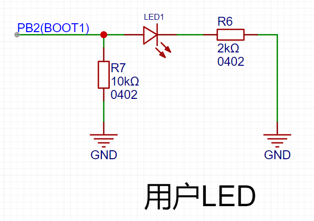</p><p data-lake-id="u712723bd" id="u712723bd"><span data-lake-id="u22c55ff4" id="u22c55ff4">点亮LED1灯，并且闪烁。</span></p><h3 data-lake-id="bhVdO" id="bhVdO"><span data-lake-id="u146c06d1" id="u146c06d1">项目新建</span></h3><p data-lake-id="u2e87d3d7" id="u2e87d3d7"><a class="yuque-card-link" href="../../_assets/03349121f95a06fb87026dd8.zip">GD32F407_Template.zip</a></p><p data-lake-id="ube74c439" id="ube74c439"><span data-lake-id="u72297b83" id="u72297b83">附件为模板代码，解压后修改项目名称。</span></p><p data-lake-id="ub35797a7" id="ub35797a7">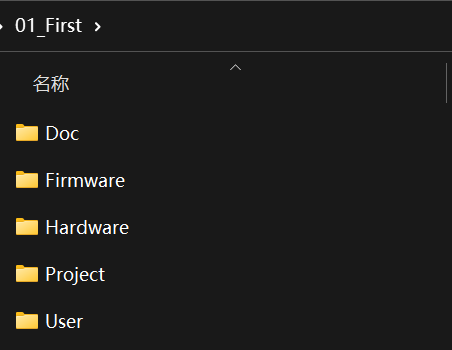</p><p data-lake-id="u08062d25" id="u08062d25"><span data-lake-id="ue0d7b227" id="ue0d7b227">进入</span><code data-lake-id="uceed09bd" id="uceed09bd"><span data-lake-id="u62153114" id="u62153114">Project</span></code><span data-lake-id="ubbec034b" id="ubbec034b">目录，双击</span><code data-lake-id="u9879cb9d" id="u9879cb9d"><span data-lake-id="u8ec3b935" id="u8ec3b935">uvprojx</span></code><span data-lake-id="u9fd5da98" id="u9fd5da98">文件，即可打开项目</span></p><p data-lake-id="uab8e0545" id="uab8e0545">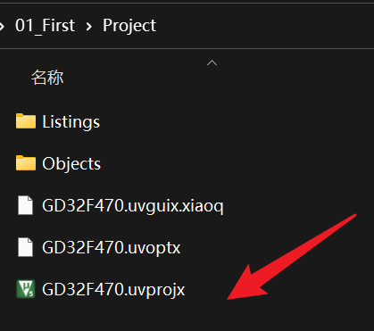</p><p data-lake-id="u61693aeb" id="u61693aeb"><strong><span class="lake-fontsize-16" data-lake-id="u886ef856" id="u886ef856">在这里特别强调</span></strong><span class="lake-fontsize-16" data-lake-id="ubdade71d" id="ubdade71d">：</span></p><ol list="u3e0eb3c3"><li data-lake-id="ue32f1f26" fid="u8344c007" id="ue32f1f26"><strong><span class="lake-fontsize-36" data-lake-id="uec079bda" id="uec079bda" style="color: #DF2A3F">不要</span></strong><span data-lake-id="u031ca3a5" id="u031ca3a5">把项目放到</span><strong><span class="lake-fontsize-36" data-lake-id="u8aec43b1" id="u8aec43b1">含有中文的路径</span></strong><span data-lake-id="ud361fdda" id="ud361fdda">下</span></li><li data-lake-id="uca4a231c" fid="u8344c007" id="uca4a231c"><span data-lake-id="ucc00e508" id="ucc00e508">文件路径不能够出现特殊字符，</span><strong><span class="lake-fontsize-36" data-lake-id="u64ae0747" id="u64ae0747" style="color: #DF2A3F">空格也不行</span></strong></li></ol><h3 data-lake-id="fDxQE" id="fDxQE"><span data-lake-id="ubebf497b" id="ubebf497b">代码编写</span></h3><h4 data-lake-id="pdWZz" id="pdWZz"><span data-lake-id="ua9ec0ff1" id="ua9ec0ff1">GPIO初始化</span></h4><span class="yuque-card-unsupported">[codeblock]</span><span class="yuque-card-unsupported">[codeblock]</span><span class="yuque-card-unsupported">[codeblock]</span><h4 data-lake-id="t0spm" id="t0spm"><span data-lake-id="u12316a67" id="u12316a67">完整代码</span></h4><span class="yuque-card-unsupported">[codeblock]</span><h3 data-lake-id="Cyn5h" id="Cyn5h"><span data-lake-id="ub0c81de8" id="ub0c81de8">程序编译</span></h3><p data-lake-id="u8287f02f" id="u8287f02f"><span data-lake-id="u6741927d" id="u6741927d">在keil的操作栏中，点击保存编译，可以进行程序编译</span></p><p data-lake-id="ub8105279" id="ub8105279">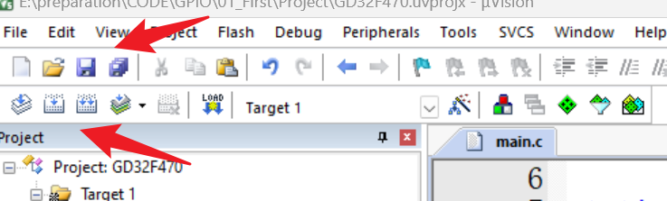</p><h3 data-lake-id="j10YU" id="j10YU"><span data-lake-id="ua2162f22" id="ua2162f22">程序烧录</span></h3><ol list="ud35bc422"><li data-lake-id="u89ed7f27" fid="u54c8d48f" id="u89ed7f27"><span data-lake-id="u09eccfd6" id="u09eccfd6">将烧录器的排线接到开发板的烧录口，将USB接到电脑端。</span></li><li data-lake-id="u6510c3b3" fid="u54c8d48f" id="u6510c3b3"><span data-lake-id="u20e25889" id="u20e25889">配置烧录方式。点击魔法棒，进入debug栏目，如下图所示，配置为</span><code data-lake-id="u61caae2f" id="u61caae2f"><span data-lake-id="ucd4f1a78" id="ucd4f1a78">CMSIS-DAP Debuger</span></code></li></ol><p data-lake-id="ubf614d37" id="ubf614d37" style="padding-left: 2em">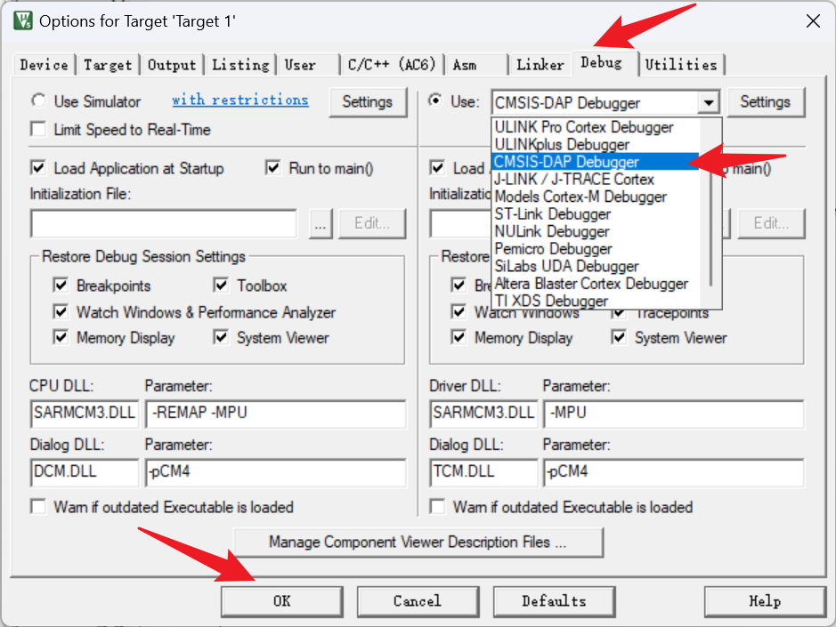</p><ol list="ud35bc422" start="3"><li data-lake-id="udcd18330" fid="u54c8d48f" id="udcd18330"><span data-lake-id="u7f1b3e3c" id="u7f1b3e3c">点击烧录按钮，如下图，进行烧录</span></li></ol><p data-lake-id="ub351e076" id="ub351e076" style="padding-left: 2em">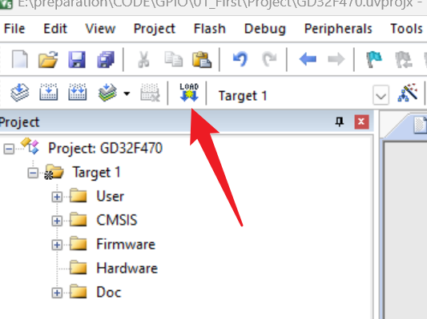</p><ol list="u16e5666c" start="4"><li data-lake-id="uc1399049" fid="ub5dff327" id="uc1399049"><span data-lake-id="u5baf1f5c" id="u5baf1f5c">按下开发板中央的重置按钮，开发板开始工作。</span></li></ol><h3 data-lake-id="FpD9P" id="FpD9P"><span data-lake-id="u87154556" id="u87154556">烧录扩展（熟悉）</span></h3><ol list="ufdb62a1a"><li data-lake-id="u7db9b00c" fid="ud4d43981" id="u7db9b00c"><span data-lake-id="u75e85983" id="u75e85983">烧录器额外配置</span></li></ol><p data-lake-id="u89b1e5c2" id="u89b1e5c2" style="padding-left: 2em">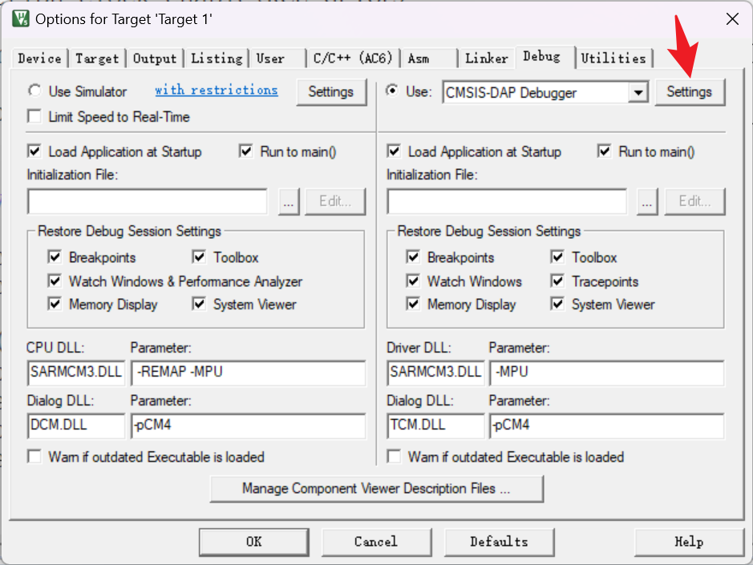</p><ol list="u317a5cd6" start="2"><li data-lake-id="uf4574ea1" fid="ub887ecec" id="uf4574ea1"><span data-lake-id="u71822586" id="u71822586">查看烧录器连接状态</span></li></ol><p data-lake-id="u3ec49091" id="u3ec49091" style="padding-left: 2em">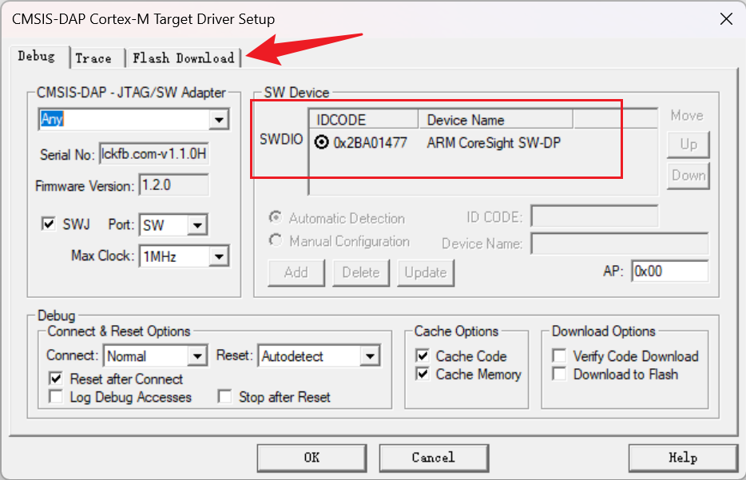</p><ol list="u65808f33" start="3"><li data-lake-id="u5b5461fa" fid="u2b8243e9" id="u5b5461fa"><span data-lake-id="u46d93b25" id="u46d93b25">配置烧录后自动重启程序</span></li></ol><p data-lake-id="u19d4c3eb" id="u19d4c3eb" style="padding-left: 2em">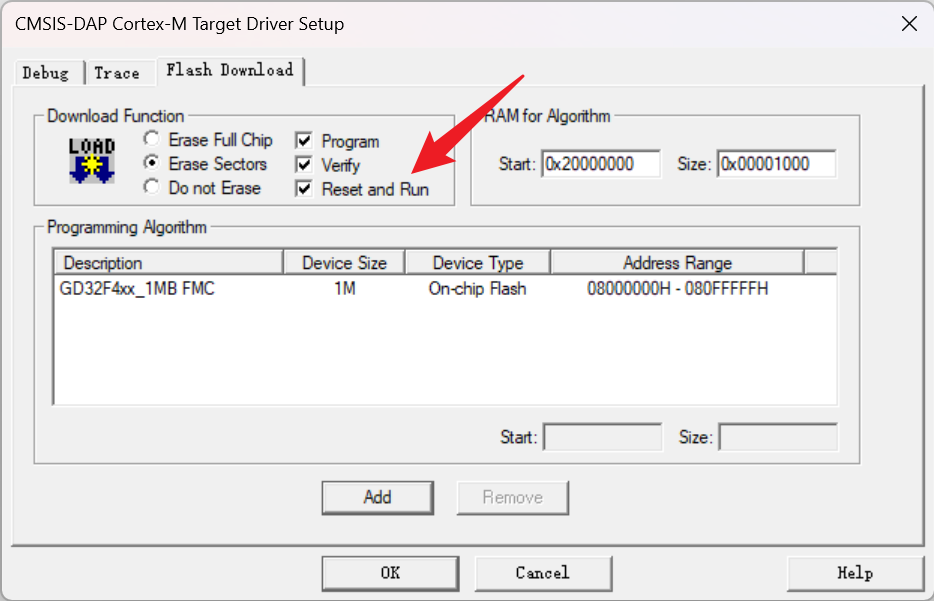</p><h3 data-lake-id="MfB90" id="MfB90"><span data-lake-id="uf323d744" id="uf323d744">官方烧录器烧录（熟悉）</span></h3><p data-lake-id="u495b4be3" id="u495b4be3"><span data-lake-id="ub9018cb5" id="ub9018cb5">GD-Link 适配器（adapter）是一个用于GD32系列MCU的三合一多功能开发工具。</span></p><p data-lake-id="uec3859ea" id="uec3859ea"><span data-lake-id="ue4e2dbd0" id="ue4e2dbd0">它通过JTAG/SWD接口提供CMSIS-DAP调试器端口。用户可以使用GD-Link 适配器（adapter）进行在线编程或在兼容的IDE（如Keil或IAR）中调试代码。</span></p><p data-lake-id="u13dbfd18" id="u13dbfd18"><span data-lake-id="u3437b7f1" id="u3437b7f1">官网链接：</span><a data-lake-id="ub3008358" href="https://gd32mcu.com/cn/download?kw=GD-Link&amp;lan=cn" id="ub3008358" rel="noopener noreferrer" target="_blank"><span data-lake-id="ue59509d5" id="ue59509d5">https://gd32mcu.com/cn/download?kw=GD-Link&amp;lan=cn</span></a></p><p data-lake-id="u159a4e7b" id="u159a4e7b"><span data-lake-id="u2167b66a" id="u2167b66a">软件下载：</span><a class="yuque-card-link" href="../../_assets/cf13e120a5fc875ed6d4c930.7z">GD_Link_Programmer_v4.6.19.15037.7z</a></p><p data-lake-id="u9db8859c" id="u9db8859c"><span data-lake-id="uda56c3d1" id="uda56c3d1">自检固件：</span><a class="yuque-card-link" href="../../_assets/828c183acb894e8065b34487.zip">自测自检固件.zip</a></p><p data-lake-id="u6cad2ff6" id="u6cad2ff6"><code data-lake-id="u618a8a64" id="u618a8a64"><span data-lake-id="u2ee487ef" id="u2ee487ef">GD_Link_Programmer_xxx.7z</span></code><span data-lake-id="u3fe0e8db" id="u3fe0e8db">压缩包下载后解压，打开其中的</span><code data-lake-id="u15d6b747" id="u15d6b747"><span data-lake-id="u99e89d67" id="u99e89d67">GD-Link Programmer.exe</span></code></p><p data-lake-id="u023d4a2e" id="u023d4a2e"><span data-lake-id="u758a0de6" id="u758a0de6">烧录流程如下：</span></p><ol list="u775713f9"><li data-lake-id="u93a565d9" fid="uffe31066" id="u93a565d9"><span data-lake-id="u020d8c7d" id="u020d8c7d">连接设备</span></li></ol><p data-lake-id="u509d5dc9" id="u509d5dc9" style="padding-left: 2em"><span data-lake-id="uac02fca7" id="uac02fca7">首先将GD32设备通过DAP_LINK转接器连接至PC。</span></p><p data-lake-id="u56db3683" id="u56db3683" style="padding-left: 2em"><span data-lake-id="u9295ef79" id="u9295ef79">然后 </span><code data-lake-id="ua89ea59b" id="ua89ea59b"><span data-lake-id="u192120e8" id="u192120e8">[Target] - [Connect]</span></code><span data-lake-id="u1df67246" id="u1df67246"> 连接设备。（快捷键为</span><code data-lake-id="uba9e642e" id="uba9e642e"><span data-lake-id="u30d2c3e1" id="u30d2c3e1">F2</span></code><span data-lake-id="uedec6ed9" id="uedec6ed9">）</span></p><p data-lake-id="u28ea6c86" id="u28ea6c86" style="padding-left: 2em">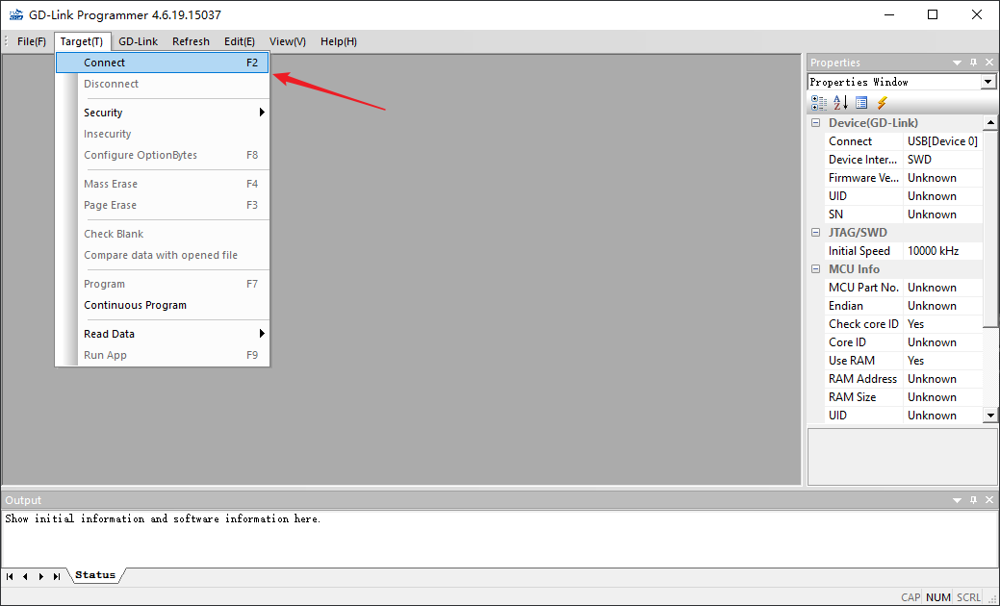</p><p data-lake-id="u1db09f50" id="u1db09f50" style="padding-left: 2em"><span data-lake-id="u5d5659ba" id="u5d5659ba">链接成功后，右侧会显示MCU相关信息，下侧会显示连接成功的输出日志。</span></p><p data-lake-id="ucd9e4ee0" id="ucd9e4ee0" style="padding-left: 2em">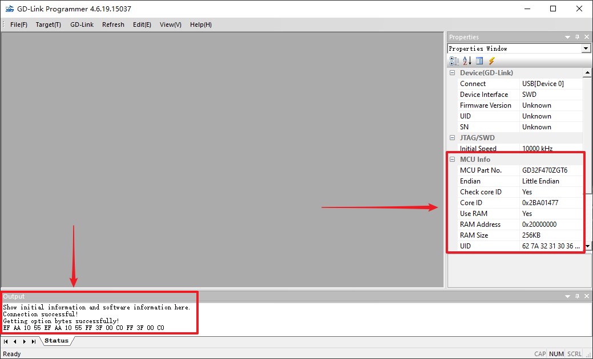</p><ol list="uaffffa21" start="2"><li data-lake-id="ue040323a" fid="u14c74655" id="ue040323a"><span data-lake-id="u80e964cf" id="u80e964cf">打开固件</span></li></ol><p data-lake-id="u95ef1d94" id="u95ef1d94" style="padding-left: 2em"><span data-lake-id="ub67ce6ba" id="ub67ce6ba">选择</span><code data-lake-id="u45bcb158" id="u45bcb158"><span data-lake-id="ub4217b23" id="ub4217b23">.hex或.bin</span></code><span data-lake-id="ud0c4e11e" id="ud0c4e11e">文件作为烧录固件：</span><code data-lake-id="u534567ad" id="u534567ad"><span data-lake-id="ub7d8f45a" id="ub7d8f45a">[File] - [Open]</span></code><span data-lake-id="uac931f37" id="uac931f37"> （快捷键为</span><code data-lake-id="u6054417f" id="u6054417f"><span data-lake-id="ufce89049" id="ufce89049">Ctrl + O</span></code><span data-lake-id="ubc034588" id="ubc034588">）</span></p><p data-lake-id="u662c252c" id="u662c252c" style="padding-left: 2em"><code data-lake-id="uc75d7f7a" id="uc75d7f7a"><span data-lake-id="u5bf5ed9a" id="u5bf5ed9a">.hex</span></code><span data-lake-id="u8e58830c" id="u8e58830c">通常在工程文件</span><code data-lake-id="u840a66a5" id="u840a66a5"><span data-lake-id="ue4ba4f45" id="ue4ba4f45">xxx.nvprojx</span></code><span data-lake-id="u7f0d9bbb" id="u7f0d9bbb">所在目录的</span><code data-lake-id="u7eda1807" id="u7eda1807"><span data-lake-id="u29098858" id="u29098858">Objects</span></code><span data-lake-id="u957239e1" id="u957239e1">子目录中。</span></p><p data-lake-id="u21daeb33" id="u21daeb33" style="padding-left: 2em">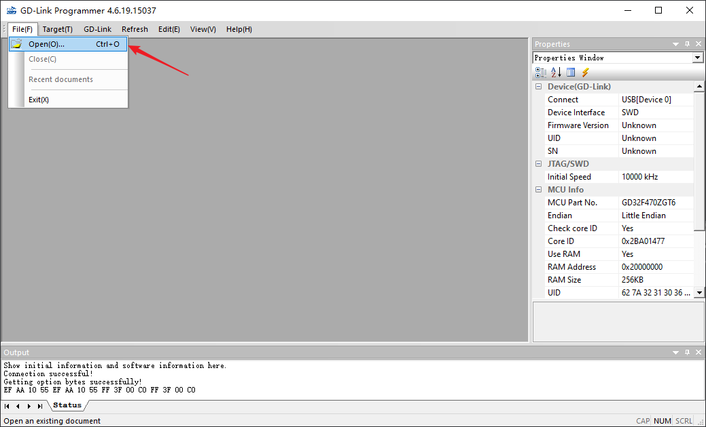</p><details class="lake-collapse" data-lake-id="u204f334d" hindent="2em" id="u204f334d" open="false"><summary class="lake-summary" data-lake-id="u8f925ad2" id="u8f925ad2"><span data-lake-id="ueccedd4d" id="ueccedd4d">如果找不到.hex文件，或编译后没有生成，请展开此折叠块进行设置</span></summary><ul list="u411e2f57"><li data-lake-id="udbf04ec7" fid="u90d39c44" id="udbf04ec7"><span data-lake-id="ub71b8f29" id="ub71b8f29">打开</span><code data-lake-id="udc3292fd" id="udc3292fd"><span data-lake-id="u250b93c9" id="u250b93c9">Options for Target...</span></code></li></ul><p data-lake-id="u128f56a8" id="u128f56a8">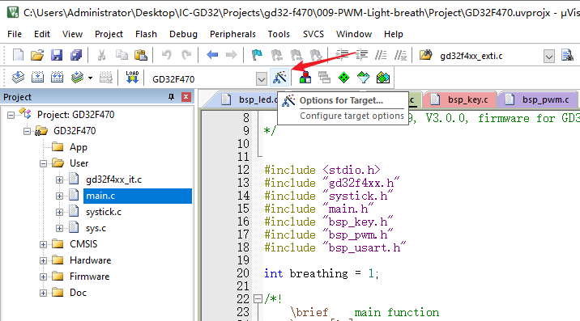</p><ul list="ua12f5576"><li data-lake-id="ud388d960" fid="u47864589" id="ud388d960"><span data-lake-id="u3ecb05bb" id="u3ecb05bb">勾选</span><code data-lake-id="u6c08d22d" id="u6c08d22d"><span data-lake-id="uc369f9ab" id="uc369f9ab">Create HEX File</span></code></li></ul><p data-lake-id="ud405d478" id="ud405d478">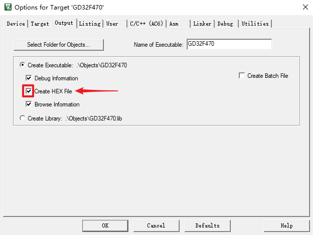</p><ul list="ud9a491e9"><li data-lake-id="ue5b9746d" fid="u185bf904" id="ue5b9746d"><span data-lake-id="uc8011f1d" id="uc8011f1d">重新编译工程即可。</span></li></ul></details><ol list="u405f38a5" start="3"><li data-lake-id="u95409547" fid="ud7567be6" id="u95409547"><span data-lake-id="ua090de3a" id="ua090de3a">烧录固件</span></li></ol><p data-lake-id="u09f4af6e" id="u09f4af6e" style="padding-left: 2em"><span data-lake-id="u784697ea" id="u784697ea">选择 </span><code data-lake-id="u92426b06" id="u92426b06"><span data-lake-id="u347f1f91" id="u347f1f91">[Target] - [Program]</span></code><span data-lake-id="ucbba4df4" id="ucbba4df4"> 进行烧录。（快捷键为F7）</span></p><p data-lake-id="ua4064933" id="ua4064933" style="padding-left: 2em">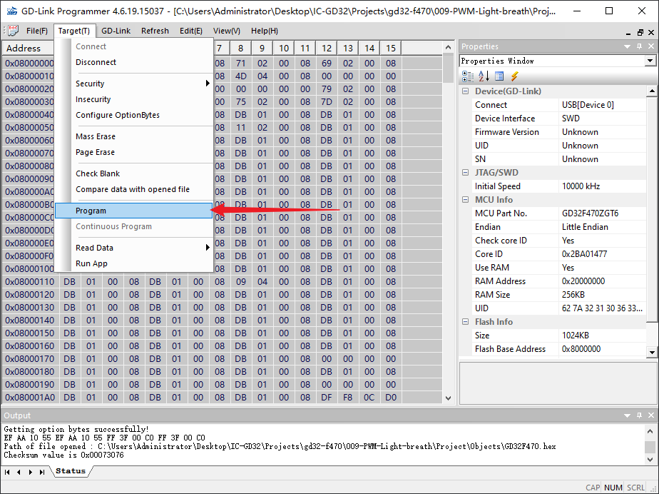</p><p data-lake-id="ub436580f" id="ub436580f" style="padding-left: 2em"><span data-lake-id="uf79f02b0" id="uf79f02b0">提示</span><code data-lake-id="u2c57bccb" id="u2c57bccb"><span data-lake-id="u3bf4059d" id="u3bf4059d">Successfully!</span></code><span data-lake-id="u0a5fc7e9" id="u0a5fc7e9">即为成功烧录</span></p><p data-lake-id="u87adabae" id="u87adabae" style="padding-left: 2em">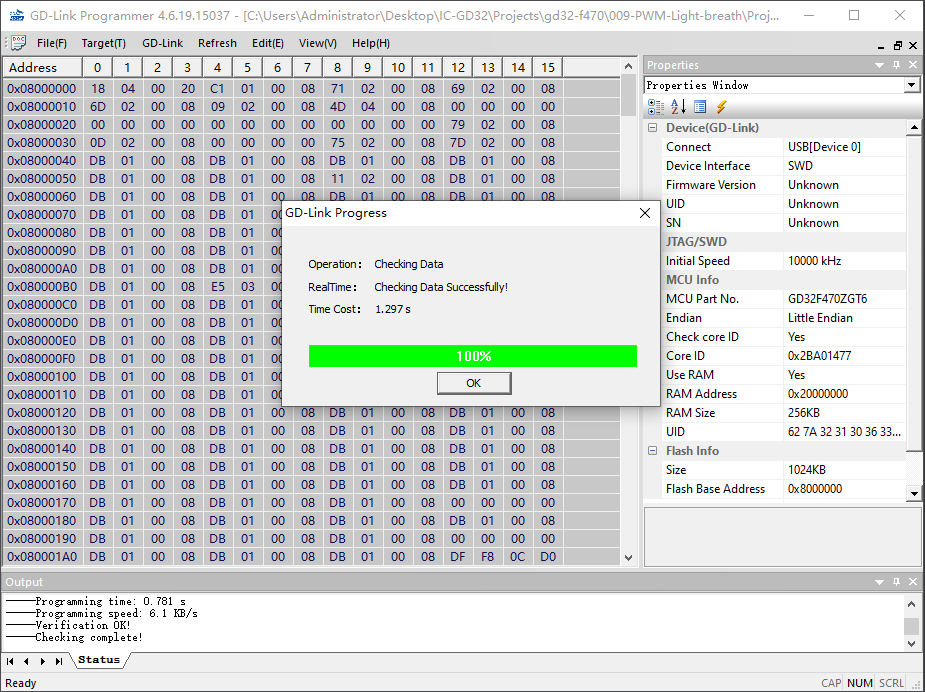</p><p data-lake-id="u20e844f0" id="u20e844f0" style="padding-left: 2em"><span data-lake-id="uc6cea09f" id="uc6cea09f">点击</span><code data-lake-id="u8ec88602" id="u8ec88602"><span data-lake-id="u18b8ea0c" id="u18b8ea0c">OK</span></code><span data-lake-id="u1dffe9c5" id="u1dffe9c5">确认，此时按下开发板上的</span><code data-lake-id="u645002d0" id="u645002d0"><span data-lake-id="u0178a4df" id="u0178a4df">RESET</span></code><span data-lake-id="ub1116e41" id="ub1116e41">按钮即可使新固件生效。或通过 </span><code data-lake-id="u412b2396" id="u412b2396"><span data-lake-id="u8909a5d3" id="u8909a5d3">[Target] - [Run App]</span></code><span data-lake-id="u829975c7" id="u829975c7"> 直接运行新的固件。</span></p><h2 data-lake-id="qZVmp" id="qZVmp"><span data-lake-id="u7cae4bfe" id="u7cae4bfe">练习题</span></h2><ol list="u96ee1b29"><li data-lake-id="u3e349594" fid="ue94edc9c" id="u3e349594"><span data-lake-id="u1203798b" id="u1203798b">实现两种API方式的LED的闪烁。</span></li></ol><p data-lake-id="u1bcb8b8e" id="u1bcb8b8e"><br/></p>